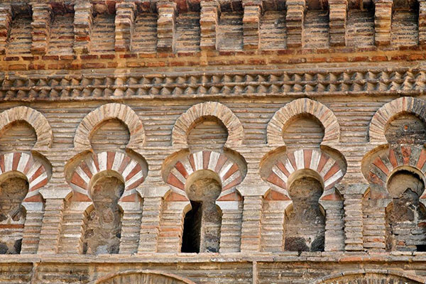

Inicio
Quienes somos
Nuestras rutas por Toledo
Vida en la judería de Toledo
RUTA NOCHE TOLEDANA
Plazas desconocidas de Toledo
Ruta Toledo 3 Culturas
Los mejores miradores de Toledo
Ruta pulsera turística de Toledo
Ruta mujeres ilustres toledanas
Toledo ciudad de la magia
El mudéjar toledano
Ruta la catedral y sus rincones
Ruta Toledo actual
Casas singulares de Toledo
Toledo en guerra
Ruta Murallas y elementos defensivos de Toledo
Ruta Toledo y el agua
stat_minus_1
Rutas privadas
Rutas para grupos
Rutas para colegios y centros docentes
stat_minus_1
Regala una ruta
Contacto
Blog
Buscador

LAS RUTAS DE TOLEDO 3 CULTURAS
Ruta toledo 3 Culturas
12,00€